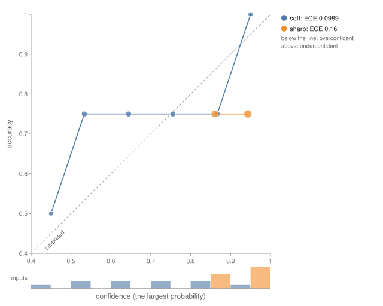
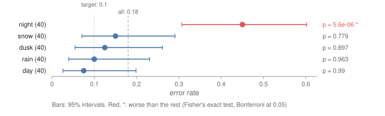

Performance¶
How well does the model do, and where does it fail? This is the Performance question of the XAI
question bank, and an explanation can't answer it: an attribution says why the model made a
prediction, not whether the prediction is right. Pulsatrix answers it with the metrics in
pulsatrix/performance.hpp (KS-3):
EvaluateClassifier: accuracy, log loss, the Brier score, calibration with a reliability diagram, a confusion matrix, and each class's precision, recall and F1;EvaluateRegressor: mean squared and absolute error, and R²;PerSliceError: the error on each slice of the data, each tested against the rest;McDropoutSamplesandEnsembleSamples, inpulsatrix/uncertainty.hpp: how sure the model is of each prediction, and whether more data would make it surer;- split conformal prediction, in
pulsatrix/conformal.hpp: prediction sets and intervals that hold the truth with a chosen probability, for any model.
Every number matches scikit-learn's on the same data, and the slice test matches SciPy's
fisher_exact. tests/performance_test.cpp checks them against values from
tools/generate_performance_reference_values.py; tests/uncertainty_test.cpp checks the
uncertainty split against numpy.
The recipe How sure is the model? runs all of it on a real model: a head on ESM-2 that predicts which mutations of TEM-1 β-lactamase still work, with its calibration, its uncertainty at positions it never saw, and where its conformal guarantee breaks.
Scoring a classifier¶
EvaluateClassifier takes the model's probabilities, (N, K), and the true classes:
#include "pulsatrix/performance.hpp"
Tensor probabilities = softmax.forward(model.forward(inputs)); // (N, K)
ClassificationReport r = EvaluateClassifier(probabilities, labels);
std::printf("accuracy %.3f, log loss %.3f, Brier %.3f, ECE %.3f\n", r.accuracy, r.log_loss, r.brier, r.ece);
The predicted class is the most probable one, the lower index on a tie. Rows aren't renormalized. The definitions are scikit-learn's:
| Field | Definition | scikit-learn |
|---|---|---|
accuracy |
the fraction of inputs whose predicted class is the label | accuracy_score |
log_loss |
the mean of −log p(label); a probability of 0 counts as 10⁻¹⁵ | log_loss |
brier |
the mean over inputs of Σₖ (pₖ − yₖ)², from 0 to 2 (Brier, 1950) | brier_score_loss(scale_by_half=False) |
precision, recall, f1 |
per class; 0 where there is nothing to divide by | precision_recall_fscore_support(zero_division=0) |
confusion[true][predicted] |
counts | confusion_matrix |
Calibration¶
A model is calibrated when its confidence means what it says: of the predictions it makes with probability 0.8, 80% are right. Modern networks are often overconfident (Guo, Pleiss, Sun and Weinberger, ICML 2017).
EvaluateClassifier groups the predictions into equal-width bins of confidence, the largest
probability: 15 by default, as Guo et al. used (ClassificationOptions::bins). Each bin is
(lower, upper]. The report gives:
bins: each bin's count, mean confidence and accuracy, the reliability diagram;ece, the expected calibration error: the gap between accuracy and confidence, averaged over the bins and weighted by their size;mce, the maximum calibration error: the largest gap in a non-empty bin.
On the test data, 200 predictions from 4 classes:
accuracy 0.575 log loss 1.411 Brier 0.662 ECE 0.152 MCE 0.455
(0.533, 0.600] n=28 confidence 0.567 accuracy 0.393
(0.733, 0.800] n=17 confidence 0.769 accuracy 0.471
(0.800, 0.867] n=28 confidence 0.834 accuracy 0.536
(0.867, 0.933] n=23 confidence 0.904 accuracy 0.696
Its most confident predictions are right far less often than it claims.
RenderReliabilityDiagramSvg draws the bins, one line per classifier, so two models can be
compared on one figure. A calibrated classifier lies on the diagonal. The marks grow with the bin's
share of the inputs, and the strip below shows that share: a bin of three inputs can sit far from
the diagonal by chance.
#include "pulsatrix/viz/performance_views.hpp"
std::ofstream("reliability.svg") << RenderReliabilityDiagramSvg({{"one network", single}, {"ensemble", ensemble}});
pulsatrix_svg one.json ensemble.json -o reliability.svg draws the same from the reports' documents
(WriteJson(ToJson(report))), each named after its file.

Note
The ECE depends on the number of bins, and with few predictions per bin it is biased upward. Compare models with the same bins, and read the reliability diagram, not just the number.
Error by slice¶
A model can do well on average and fail one group. PerSliceError reports the error on each
slice, such as a demographic group, a data source or a class of input. It tests each slice against
the rest of the data, so a failure confined to one group isn't averaged away:
SliceErrorReport s = PerSliceError(probabilities, labels, slices); // slices: one name per input
std::cout << DescribeSliceError(s);
error 0.425 over 200 inputs; each slice against the rest (Fisher's exact test, alpha 0.05 over 3 slices)
slice n error 95% interval rest p
c 66 0.591 0.470 to 0.701 0.343 0.000751 WORSE
a 67 0.358 0.254 to 0.478 0.459 0.935
b 67 0.328 0.228 to 0.447 0.474 0.983
at least one slice is worse than the rest
How each slice is tested:
- Errors of 0 or 1 (right or wrong) use Fisher's exact test, one-sided. Is the slice wrong more often than the rest? The interval is Wilson's score interval.
- Losses use a permutation test of the slice's mean against the rest's: 999 relabelings that
keep the slice sizes. The interval is the normal approximation. Pass the losses as a vector:
PerSliceError(errors, slices). - A slice is worse when its p-value is at most α divided by the number of slices: Bonferroni's
correction, so testing many slices doesn't find one by chance. α is 0.05 by default
(
SliceErrorOptions::alpha); the intervals are at level 1 − α.
A slice that isn't flagged hasn't been shown to be fine. A small slice can have a high error and still not be significantly worse; its interval shows how little is known.
RenderSliceErrorSvg(s) draws the report, worst first, with each interval and p-value; slices
worse than the rest are red. SliceErrorViewOptions names the metric and adds a reference line:

Uncertainty¶
A probability of 0.6 from one network doesn't say whether the network has seen inputs like this
one. Several predictions of the same input that disagree do. pulsatrix/uncertainty.hpp gets them
two ways:
- Monte Carlo dropout (Gal and Ghahramani, ICML 2016):
McDropoutSampleskeeps the dropout layers on at inference and runs the network several times. Everything else stays in eval mode, so BatchNorm uses its running statistics, and each module's mode is restored afterwards. LoRA adapters with dropout count as dropout layers. - Deep ensembles (Lakshminarayanan, Pritzel and Blundell, NeurIPS 2017): train several
networks from different seeds, and
EnsembleSamplesruns each one.
#include "pulsatrix/uncertainty.hpp"
auto predict = [&](const Tensor& x) { return softmax.forward(model.forward(x)); };
std::vector<Tensor> samples = McDropoutSamples(model, predict, inputs, 30);
UncertaintyDecomposition u = DecomposeUncertainty(samples);
// u.mean: the prediction to use; u.total, u.aleatoric, u.epistemic: per input, in nats
DecomposeUncertainty splits the entropy of the mean prediction into two parts (Depeweg et al.,
ICML 2018):
| Part | Formula | What it means |
|---|---|---|
| total | H[E p], the entropy of the mean | how unsure the prediction is |
| aleatoric | E H[p], the samples' mean entropy | noise in the data: each sample is unsure too, and more data wouldn't help |
| epistemic | total − aleatoric, the mutual information (BALD) | the samples disagree: the model hasn't learned this region, and more data would help |
Samples that agree on 50/50 give all aleatoric uncertainty; confident samples that disagree give
the same total, all epistemic. agreement is the fraction of samples that pick the mean's class.
For regression, each member predicts a mean and a variance, trained with GaussianNLLLoss: the
network outputs (μ, s) and its variance is softplus(s) + 10⁻⁶, as Lakshminarayanan et al. did.
CombineGaussians mixes the members: the aleatoric part is their mean variance, and the epistemic
part is the variance of their means.
Note
The decomposition is only as good as the samples. Dropout samples come from one network and tend to agree more than an ensemble's do. Neither is the true posterior, and the epistemic part says how much these samples disagree, nothing more.
Conformal prediction¶
A probability of 0.9 doesn't mean the model is right 90% of the time; calibration says how far off it is, but not what to do about it. Split conformal prediction (Vovk, Gammerman and Shafer; Angelopoulos and Bates, arXiv 2107.07511) turns any model's scores into a guarantee:
- Score each example of a held-out calibration set, which the model wasn't trained on, by how badly the model fits it.
- Take q̂, the ⌈(n + 1)(1 − α)⌉-th smallest score.
- A new input's prediction set holds every answer that would score at most q̂.
If the calibration examples and the new one are exchangeable, the set holds the true answer with probability at least 1 − α:
#include "pulsatrix/conformal.hpp"
ConformalOptions options;
options.alpha = 0.1; // 90% coverage
options.score = ConformalScore::Aps;
ConformalClassifier c = CalibrateConformalClassifier(calibration_probabilities, calibration_labels, options);
std::vector<std::vector<int64_t>> sets = PredictionSets(c, test_probabilities);
CoverageReport r = EvaluateCoverage(sets, test_labels);
| Score | Definition | Sets |
|---|---|---|
Lac |
1 − p(true class) (Sadinle, Lei and Wasserman, 2019) | the smallest on average, but they can be empty, and hard inputs are undercovered |
Aps |
the mass of the classes ranked at or above the true one (Romano, Sesia and Candès, 2020) | larger for harder inputs; randomized brings coverage close to exactly 1 − α |
For regression, CalibrateConformalRegressor scores the absolute residual and gives ŷ ± q̂.
CalibrateConformalQuantileRegressor takes a quantile regressor's lower and upper predictions and
gives CQR's [lo − q̂, hi + q̂] (Romano, Patterson and Candès, 2019), narrower where the noise is.
EvaluateCoverage reports the coverage, the mean set size or interval width, how many sets were
empty, and the coverage of each set size. Large sets that are undercovered are a sign the score
doesn't adapt to hard inputs.
The guarantee is marginal: it holds on average over inputs, not for each input or each
group. A model can cover 90% overall and 70% of one group. CoverageReport::misses holds a 0 or 1
per input, so PerSliceError(r.misses, slices) tests each group's coverage like any other error.
Draw it with the target miss rate as the reference:
SliceErrorViewOptions view;
view.metric = "miss rate";
view.reference = 0.1; // alpha
view.reference_label = "target";
std::ofstream("coverage.svg") << RenderSliceErrorSvg(PerSliceError(r.misses, slices), view);
Note
With too few calibration examples, the rank ⌈(n + 1)(1 − α)⌉ is above n, q̂ is infinite and every set holds every class: at α = 0.1 that takes fewer than 9 examples.
LAC sets and absolute-residual intervals match MAPIE 1.1.0's, and APS sets Angelopoulos and
Bates' reference code (tools/generate_conformal_reference_values.py).
Adversarial robustness¶
How small a change to the input makes the model change its answer? pulsatrix/adversarial.hpp
searches for one by following the gradient of the loss with respect to the input:
- FGSM (Goodfellow, Shlens and Szegedy, ICLR 2015) takes one step of size ε: the sign of the gradient under the L∞ norm, its direction under L2.
- PGD (Madry et al., ICLR 2018) starts at a random point within ε of the input, takes
stepssmaller steps, and after each one projects back within ε and into the input's valid range. - Targeted attacks push the input toward a chosen class instead of away from its own.
#include "pulsatrix/adversarial.hpp"
AttackOptions options;
options.epsilon = 8.0 / 255; // L∞ budget, for pixels in [0, 1]
options.clip_min = 0;
options.clip_max = 1;
AttackResult r = Pgd(ClassifierFrom(model), images, labels, &backend, options);
// r.adversarial, r.success, r.robust_accuracy, r.perturbation
RobustnessCurve curve = RobustAccuracyCurve(ClassifierFrom(model), images, labels, {1.0 / 255, 2.0 / 255, 4.0 / 255, 8.0 / 255},
&backend, options);
ClassifierFrom takes a Module or an ExplainerContext. For any other model, fill a
DifferentiableClassifier with its forward pass to logits and its backward pass to the input.
RobustAccuracyCurve gives the accuracy that survives untargeted PGD at each ε. It also gives the
fraction of correctly classified inputs each attack flipped, and the mean size of the successful
perturbations. The results are pulsatrix.attack.v1 and pulsatrix.robustness_curve.v1
documents.
The steps, projection, clipping and random start follow torchattacks' FGSM, PGD and PGDL2.
tools/generate_adversarial_reference_values.py reimplements them in numpy, and the tests match
it. On a linear model, where the best attack is known in closed form, PGD finds it.
Note
PGD finds adversarial examples; it doesn't prove there are none. A model that resists it may fall to a stronger attack, so the robust accuracy it reports is an upper bound. Gradient masking, where a model's gradients are uninformative rather than its decisions robust, makes gradient attacks look weaker than they are (Athalye, Carlini and Wagner, ICML 2018).
Explanation robustness¶
An explanation that changes a lot when the input barely does says more about the explainer than
the model. Ghorbani, Abid and Zou (AAAI 2019) changed saliency maps beyond recognition with
imperceptible perturbations. ExplanationSensitivity (in pulsatrix/explanation_robustness.hpp)
measures it the way Quantus does:
- max- and average-sensitivity (Yeh et al., NeurIPS 2019): ‖E(x′) − E(x)‖₂ / ‖E(x)‖₂ over
samples x′ drawn uniformly within
radiustimes the input's spread, the largest and the mean; - the local Lipschitz estimate (Alvarez-Melis and Jaakkola, 2018): the largest ‖E(x′) − E(x)‖₂ / ‖x′ − x‖₂;
- adversarial sensitivity: the same ratio at FGSM's point, the perturbation an attacker would try first. The step is halved until the prediction stays.
Only samples that keep the predicted class count: an explanation should change when the prediction does.
#include "pulsatrix/explanation_robustness.hpp"
DifferentiableClassifier classifier = ClassifierFrom(model);
SensitivityReport s = ExplanationSensitivity(x, explain, predict, &classifier, &backend);
// s.max_sensitivity, s.avg_sensitivity, s.local_lipschitz, s.adversarial_sensitivity, s.kept
tools/generate_explanation_robustness_reference_values.py computes the same metrics in numpy, on
the same samples, and the tests match it. Under the Control reason, the planner requires it as the
robustness check, and BuildExplanation runs it (Reporting an explanation).
In a report¶
The Control reason requires per-slice error. The planner marks it available when the caller has
the dataset's labels and slices (ModelTraits::has_labels, or pulsatrix_plan --labels).
BuildExplanation then runs it on request.dataset, request.labels and request.slices. The
check fails, and blocks the report, when a slice is worse than the rest:
request.reason = XaiReason::Control;
request.traits.has_dataset = true;
request.traits.has_labels = true;
request.dataset = inputs; // each (1, ...)
request.labels = labels;
request.slices = slices;
Explanation e = BuildExplanation(request, x, explain, predict, &model);
For a regressor, or any model whose error isn't the wrong class, run PerSliceError on its losses
and pass SliceErrorCheck(report) to ReportExplanation.
The Performance question itself plans ClassifierMetrics, RegressorMetrics,
PerSliceError, MonteCarloDropout, DeepEnsemble, SplitConformal and
AdversarialAttack. Those that score against true labels (the metrics, conformal calibration and
the attacks) need ModelTraits::has_labels. They describe how the model behaves, not what it learned, so the planner doesn't
ask for a null-model baseline for them.
Each report has a JSON document: pulsatrix.classification_report.v1,
pulsatrix.regression_report.v1, pulsatrix.slice_error.v1, pulsatrix.uncertainty.v1 and
pulsatrix.coverage.v1.